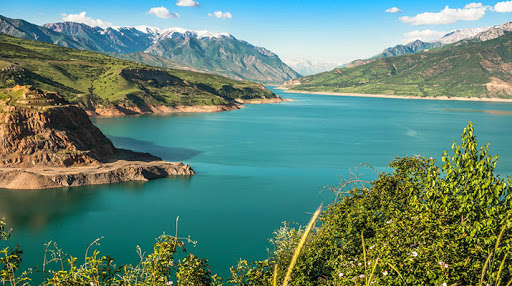
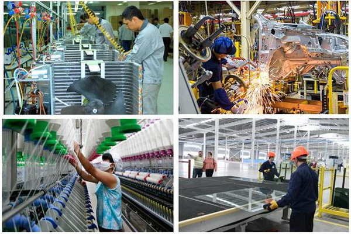
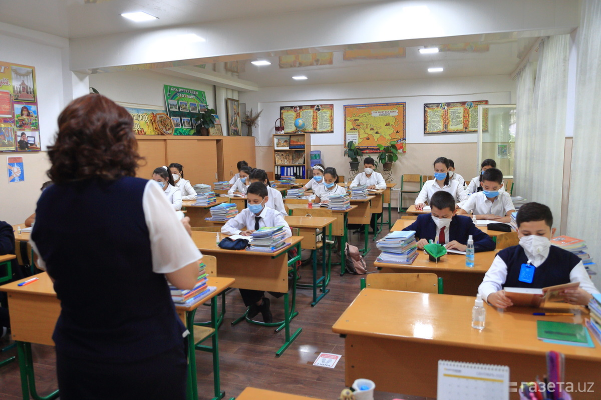
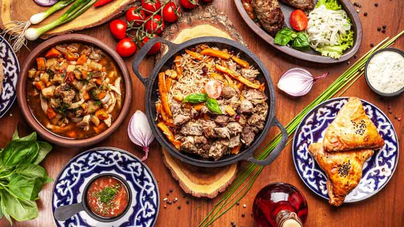

Узбекистан
География
 Протяжённость границ — 6221 км.
Протяжённость: по долготе (с севера на юг) 925 км, по широте (с запада на восток) 1400 км самая восточная точка Узбекистана пгт Тополино Андижанской обл.
Наибольшая высота над уровнем моря: пик Хазрет-Султан высотой 4643,3 м[46] (Гиссарский хребет). Наименьшая высота над уровнем моря: солончак Кулатай во впадине Мынбулак — −12,7 м(пустыня Кызылкум).
Климат резко континентальный. Средние температуры января — от +4 °C на юге до −10 °C на севере, июля — от +27 °C на севере до +37 °C на юге. Самая низкая температура −38 °C.
Территория Узбекистана разнообразна, но большие пространства этой страны малопригодны для жизни: это пустыни, степи и горы. Города Узбекистана, вокруг которых сосредоточена жизнь народа этой страны, находятся в долинах рек. Республика Узбекистан состоит из Республики Каракалпакстан, областей, районов сельского типа, районов городского типа, городов областного подчинения, городов районного подчинения, сёл (кишлаков и аулов). Столица Узбекистана — город Ташкент, имеет статус города центрального подчинения.
Экономика
 По запасам золота республика занимает 4-е место в мире, а по уровню его добычи - 7-е место (около 92 т золота ежегодно), по запасам меди — 10—11 место; урана — 11—12 место, а по его добыче — 7—8 место (по данным World Nuclear Association, European Nuclear Society и British Geological Survey[92] Узбекистан стоит на 12-м месте в мире по запасам урана и на 7-м - по его добыче .
Отраслевая структура ВВП на 2017 год: сельское хозяйство — 19,3 %, промышленность — 33,4 %, услуги — 47,3 %.
В 1994—1995 годах в стране была проведена масштабная приватизация: за 2 года передано в частные руки и преобразовано в акционерные общества 18 281 предприятие. Вторая, менее масштабная волна приватизации пришлась на 2001—2005 годы, когда разгосударствлению подверглись 6698 предприятий. Если в ходе первой волны около 21 % предприятий было разгосударствлено через акционирование, то в 2001—2005 годах этот показатель составил чуть более 8 %. В 2007—2010 годах приватизация шла исключительно путём прямых продаж, а не акционирования. Всего в 1994—2010 годах в республике были разгосударствлено (акционирование и прямые продажи в частные руки) 30 731 предприятие.
В стране разведано на данный момент около 40 месторождений с запасами урана, основу которых составляют 27 месторождений. По данным информационного центра Государственного комитета по геологии и минеральным ресурсам республики, разведанные и оценённые запасы урана составляют 185,8 тыс. т. Республика не обладает собственной атомной промышленностью, весь произведённый малообогащённый уран поставляет на экспорт.
В Узбекистане создана мощная минерально-сырьевая база, являющаяся одной из основных статей валютных поступлений в экономику страны. Эту базу составляют сегодня более 1800 месторождений и около 1644 перспективных проявлений полезных ископаемых, 118 видов минерального сырья, из которых 65 осваиваются. Минеральные ресурсы Узбекистана оцениваются экспертами примерно в 11 трлн $.
Язык
 Государственным языком Узбекистана является узбекский. Второй по значимости — русский язык, которым владеет значительная часть населения и он имеет широкое распространение в стране. Владение русским языком у жителей городов гораздо лучше, чем у жителей сельской местности. Хотя русский язык не имеет никакого статуса в стране, значительная часть официальных документов, отчётов и т. п. издаются или дублируются на русском языке, данный язык имеет широкое распространение во всех сферах деятельности. В школах преподавание русского языка является обязательным и его изучают со второго класса. На территории Узбекистана сохранилась и продолжает действовать сеть государственных учебных заведений, в том числе высших учебных заведений на русском языке. В Узбекистане функционируют множество газет и журналов на русском языке, а также 848 школ с русским языком обучения с общим количеством обучающихся в 372 256 человек.
Обязательное изучение английского языка и других иностранных языков является одним из приоритетов государства. Данный язык также является обязательным к преподаванию в школах. С 2013/2014 учебного года введено обязательное изучение иностранного языка (преимущественно английского, но и немецкого, французского) с первого класса в школе (до этого иностранные языки школьники начинали изучать с пятого класса).
Помимо узбекского языка, который является государственным по всей стране, в ряде регионов используются и другие языки. Так, на территории республики Каракалпакстан официальным является также и каракалпакский язык.
Кухня
 Узбекская кухня — национальная кухня Узбекистана. Богатая кухня, имеет глубокую историю, тесно связана с узбекской культурой, языком и традициями. Значительное влияние на разнообразие и своеобразие рецептов оказало то, что в отличие от географических соседей узбекам исторически был свойственен как оседлый образ жизни, так и кочевой. В то же время сохранились кулинарные традиции и культура предков, также взаимосвязи с соседними народами оказали глубокое влияние на разнообразие и богатство блюд. Происхождение многих из них имеет глубокие корни и сохранили традиционные вид. Они популярны во всем мире, такие как плов, лагман, манты и другие. В Узбекистане есть свои особенности приготовления этих блюд, а также свои совершенно оригинальные кушанья.
Сложившиеся замечательные традиции узбекская кухня имеет в приготовлении всех видов блюд: основных мясных блюд, супов, хлебобулочных и кондитерских изделий, салатов и напитков.
Для основных мясных блюд характерно приготовление жареной, высококалорийной пищи, широкое использование хлопкового масла, курдючного сала, масла, специй и зелени.
Tashkent City
Ташкент-Сити (Международный деловой центр Tashkent City) — строящийся деловой центр в Ташкенте. Расположен в Шайхантахурском районе, между проспектом Алишера Навои, улицами Олмазор и Фурката и проспектом Ислама Каримова.
В рамках МДЦ «Tashkent City» создаётся зона деловой активности, которая объединит бизнес, апартаменты проживания и досуг. Управляющей компанией проекта МДЦ «Ташкент-Сити» выступает Дирекция «Tashkent City».
Строительство ведётся на месте снесённых махаллей (кварталов) Олмазор и Укчи, на территории общей площадью 80 га. Это самый крупный единовременный строительный проект на территории Узбекистана. Строительство проекта ведётся на финансовые вливания частных инвесторов.
Коммерческая концепция проекта разработана американской компанией Cushman & Wakefield.
Из 8 проектов будущего делового центра была выбрана концепция, предложенная турецкой архитектурной компанией Tabanlıoğlu Architects.